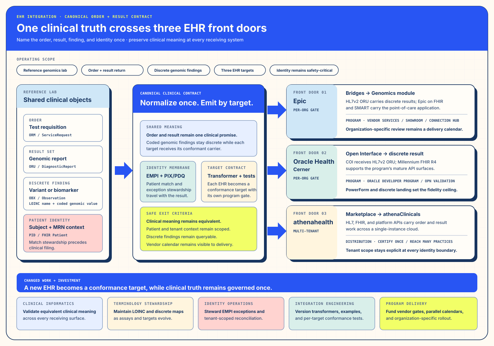

Track ISolution Architecture · Purpose and Changed WorkChoose each front door by distribution, workflow, and safety.
I. Solution Architecture — Choose the front-door strategy by distribution and safety
§a Debrief — Three Front Doors, One Clinical Promise
Ambulatory practices across the network ordered the same genomic service and needed the same clinically faithful result in return. Epic, Oracle Health, and athenahealth presented different ordering workflows, identity boundaries, integration programs, and distribution economics. A lowest-common-denominator document would have simplified delivery by transferring translation work back to clinicians.
SR2’s canonical result therefore expanded into a canonical order-and-result contract. The contract defined what had to remain equivalent across the network; the front-door strategy defined what could remain different.
§b The Bottleneck — Ordering Asymmetry, Three Identity Domains, Three Distribution Models
§c The Intervention — Extend the Canonical Model and Specialize the Front Door
The shared contract gained ordering intent, required clinical context, specimen linkage, and target-neutral status. Each EHR received a dedicated ordering and result transformer, identity policy, conformance suite, and activation path. Multi-tenant onboarding reused the shared application while binding every interaction to an explicit organization and tenant context.


§d The Outcome — Successful Expansion with a Tenant-Scoping Near-Miss
The canonical capability extended from two receiving systems to three, and the multi-tenant path changed the economics from repeated site builds toward reusable onboarding. The tenant-scoping near-miss is retained as a teaching scenario rather than historical telemetry: a pre-release check exposed that valid clinical data could still reach the wrong practice context if organization and tenant identity were not bound together. That scenario changed the release contract before the operating model scaled.
§e Repeatability — Let Distribution Shape Onboarding and Identity Shape Safety
Keep the clinical promise canonical. Choose onboarding and activation by the receiving system’s distribution model. For multi-tenant systems, make organization and tenant scope part of every identity, authorization, test, audit, and recovery decision. Scale through reusable conformance and explicit local contracts.